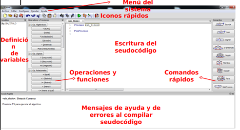

PSeInt es un entorno de desarrollo orientado al aprendizaje de la programación mediante pseudocódigo, diseñado para facilitar la comprensión de la lógica algorítmica en etapas iniciales. Su interfaz es intuitiva y se encuentra organizada en diferentes secciones que permiten al usuario interactuar de manera clara y eficiente con los elementos necesarios para la construcción de algoritmos.

En la parte superior se encuentra el menú del sistema, el cual contiene las opciones principales como archivo, edición, configuración y ejecución. Justo debajo, se ubican los iconos de acceso rápido, que permiten ejecutar acciones frecuentes como crear un nuevo algoritmo, guardar o ejecutar el pseudocódigo de manera ágil.
En el área central se encuentra la zona de escritura del pseudocódigo, que es el espacio principal donde el usuario desarrolla sus algoritmos. Esta sección está diseñada para facilitar la lectura y organización del código, permitiendo una escritura estructurada y comprensible.
En el lado izquierdo se localiza el panel de definición de variables y operaciones, donde se pueden visualizar diferentes funciones, operadores lógicos, aritméticos y relacionales que apoyan la construcción de algoritmos. Esta sección resulta especialmente útil para principiantes, ya que ofrece una guía práctica de los elementos disponibles.
En el lado derecho se encuentran los comandos rápidos, los cuales permiten insertar estructuras básicas como condicionales, ciclos y otras instrucciones sin necesidad de escribirlas manualmente, facilitando así el aprendizaje de la sintaxis.
Finalmente, en la parte inferior se ubica la sección de mensajes de ayuda y errores, donde el sistema muestra información relevante al momento de ejecutar el algoritmo, incluyendo advertencias o errores que ayudan al usuario a corregir y mejorar su pseudocódigo.
En conjunto, estas características convierten a PSeInt en una herramienta didáctica que permite al estudiante enfocarse en la lógica de programación, reduciendo la complejidad técnica y favoreciendo un aprendizaje progresivo y estructurado.